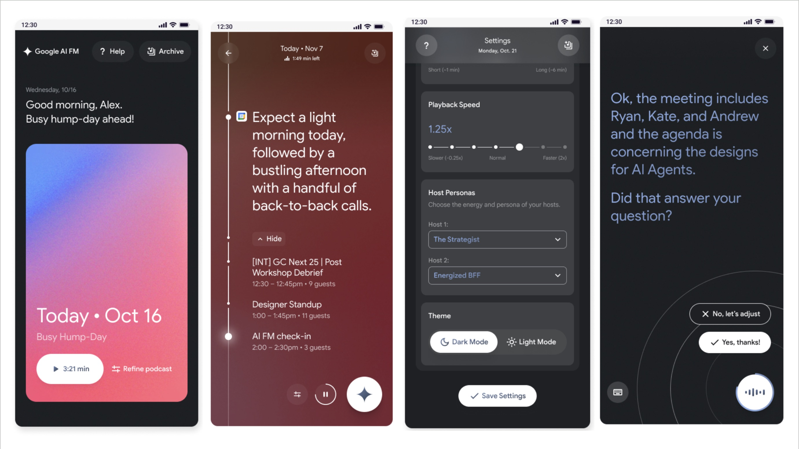
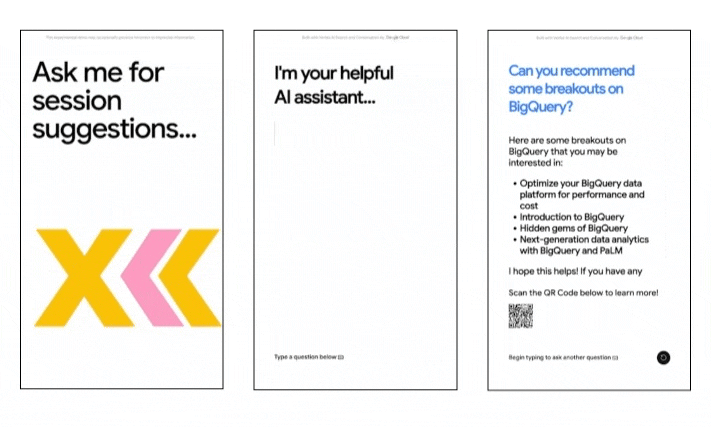
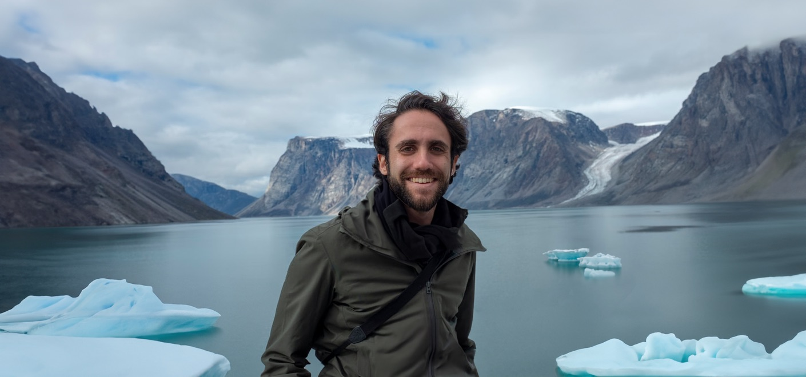

Say “electric bike” and it builds you one, then builds the interface to edit it — sliders for wheels and handlebars, knobs and keys if you’d picked a synthesizer. The controls don’t exist until the object does. Gemini all the way down: Nano Banana for the images, Nano Banana Lite for edits fast enough to feel live, Gemini writing the CAD, Omni for the video. Next ’26, all three days.
The trick name tells you what the athlete meant to do; the physics tells you what it actually took. Shaun White’s Cab Double Cork 1440 is named for 1,440 degrees of rotation and measures closer to 1,122 — tilt the axis and the path across the sphere gets shorter. Film a rider on a phone and a Google DeepMind model rebuilds a 63-joint 3D skeleton, through bulky winter gear, and computes what really happened. Built with U.S. Ski & Snowboard for Milan Cortina.
Replay shows you that someone landed it. It doesn’t show you how. The same 63-joint pose model, pointed at NBC’s live feeds: ingest the camera feed, reconstruct the skeleton, compute rotation, amplitude and trajectory, and push finished graphics to air in under thirty seconds. The models sit warm in TPU memory on Vertex AI so nothing cold-starts mid-run.
For Stephen Curry, a jump shot is one motion he stopped having to think about decades ago. For the rest of us it’s about ten things going wrong at once, none of them visible to the person doing them. Built with Curry for Curry Camp — his three-day clinic for the best high schoolers in the country — it runs four Pixel cameras and MediaPipe on-device across knee bend, elbow, release, arc and follow-through, and Gemini 2.5 Pro says the correction out loud between shots.
Draw something badly and it will make a “film” out of it. Veo Studios takes a doodle, a sentence or a torn-up collage and runs it through Gemini, Imagen 3 and Veo 2 — stills first, so you can fix the look before committing to motion, then video.
A reel of Veo 2 tests. The prompts are mostly camera specs — focal length, aperture, shutter angle, stock — plus a lot of iteration on motion blur, which is the thing that most reliably gives generated video away. The target was footage that survives being watched by someone who knows what a 35mm lens does. It mostly does now, which is the unsettling part.

A daily podcast with an audience of one. It reads your calendar, your mail and the morning’s news, writes a briefing, and hands it to a synthetic host you choose.
An AI swing coach built at Pebble Beach, then handed to Bryson DeChambeau and his Crusher GC teammates to tune against their own swings. Computer vision tracks pelvis lift, chest rotation and body position through the motion; Gemini reads the mechanics and returns feedback in under a minute, from video shot on a phone. DeChambeau’s verdict was that it understands “your quirks and strengths and weaknesses.”
Dites-le avec des fleurs. Tell it you’re shopping for a little girl who likes brutalism and it returns something grey, heavy and architectural; ask for Cézanne and you get the ochres and dusty greens of a Provençal still life. Really this is a demo about driving image generation with structured data — Gemini reads a million-plus flower photographs from GBIF, the actual petals rather than the labels, and Imagen 3 Flash renders fast enough to keep arguing with. Built for Cannes Lions. Not an automated attempt to pick flowers for my wife.
An embedding safari. Ask for hippos bathing, or insects that move in groups, or the longest-living lizards in Nevada, and it goes and finds them — 7.3 million photographs out of 9TB of open sighting data from GBIF, retrieved by meaning rather than keyword. Vertex AI multimodal embeddings curate the photos and metadata, 19,000 cross-referenced Wikipedia pages keep the descriptions honest, and the screen assembles itself around whatever you asked.

A thousand conversations in three days on the floor at Next ’23, back when a chatbot that actually knew the schedule was still a novelty. It answered questions about sessions, the building and the products, grounded in conference data rather than improvising.
Apr. 2, 2024
A Preface on Gen AI Design
When I first started tinkering with AI, I had no idea it would become an obsession. But as I've dug deeper into the field, working alongside engineers and researchers, I've realized that this technology is going to completely upend how we create, think, and share ideas. For journalists, creators, academics, and anyone who traffics in knowledge, AI won't just change how we work; it'll reshape the very nature of what we consider work.
But here's the thing: as much as I'm excited about the possibilities, I'm also keenly aware of the pitfalls—not least of which is the post-truth, synth-flooded internet we're quickly arriving at today. We're playing with some seriously powerful tools here, and if we're not careful, things could go sideways fast. I'm talking about issues of trust, transparency, privacy, liability, bias, intellectual property, geopolitical stability, and a burst of new questions around human consciousness—the kinds of thorny issues that keep philosophers up at night.
For me, charging headlong into the AI revolution, I want to make sure we're building safeguards and thinking hard about the human impact. It's not enough to just build cool stuff; we have a responsibility to do it thoughtfully and with integrity. Call me old-fashioned, but I think the endgame here cannot be about machines replacing humans. It cannot be about LLMs writing screenplays, nor some sagacious GPT-whatever that knows everything about everything—it's got to be about machines and humans working together in a chaotic, beautiful symbiosis of creativity and intelligence. It's got to be about trying to achieve all the great things that might now be possible sooner thanks to AI—advances in scientific research and sustainable materials, breakthroughs in robotics for prosthetics and accessibility, and unprecedented cultural exchange through universal language—just to name a few.
The road ahead is going to be a wild ride, but I'm stoked to be part of the crew trying to map out an ethical path forward.
- Noah

Eight research hospitals, dozens of interviews, three years, and a rendering method we had to build ourselves — a CT scan is made to be read by a radiologist, not looked at by a reader. The piece follows people who caught Covid in the first weeks of 2020 and still can’t take a full breath. I reported it, edited it, and directed the 3D.
Two years leading a team of engineers, artists and reporters at NYT R&D on a single question: what does a story do once it can stand in your living room at true scale? Dozens of attempts — spatial stories, real-scale explainers, 3D reconstructions, environments you walk into.
The largest fire of 2021 got big enough to make its own thunderstorms — pyrocumulus clouds that threw lightning and started new fires miles downwind. We rebuilt one of them in 3D from satellite and radar so you could stand underneath and look up.

A new study put it at roughly 1-in-50, in any given year, that a storm parks over California and doesn’t leave for a month. We took the model output and built the part you can actually picture: where the water goes, how deep it gets, and how long it sits there.
The gymnast, Sunisa Lee. The hurdler, Dalilah Muhammad. The climber, Adam Ondra. We motion-captured all three and rebuilt their events in 3D, so you can stop the half-second that decides a medal and walk around it.
Newsroom AR mostly means a 3D object floating on a pedestal, because the tools to do anything else don’t exist. So we built some and handed them to working reporters. This is what came back.

Covid emptied the churches. It didn’t silence the choirs. We photogrammetry-scanned singers from Harlem’s gospel congregations one at a time and rebuilt the choir in 3D, with a light show, because in the spring of 2021 that was the only way to get them in a room together.
Doyers Street is one crooked block in Chinatown with a century of restaurant on it. We scanned it so you can walk it — Nom Wah’s tea parlor, the barbershops, the bend they used to call the Bloody Angle — and then out into the monuments and parks around it.
We simulated the air in a real New York City classroom — one teacher, a full class, one window — so you can watch the exposure risk drop the moment it opens. That year’s reopening fight was enormous and almost entirely abstract. This put it in a room people recognized.
Down to the scale of a single droplet, to show what a mask physically does to one. In late 2020 the whole country was arguing about this without anybody having seen it happen.
The S&P 500 emits about as much carbon as the Amazon absorbs. The finding underneath it is the awkward one: drop the heaviest emitters out of the index and returns barely move. Which means the case for holding them was never really a financial case.
Every coal plant China was financing outside its own borders, on one map — 60 of them, across Asia, Europe, Africa and South America. Built, they’d emit roughly what Spain does.
Things Kogonada would prefer to discuss instead of making small talk: The question of existence, what it means to be modern, all our choices.
What should one expect from a 3-hour German comedy? It’s hysterical and devastating all at once. I left the American premier with tears pooled in my dimples, still hyperventilating, still trying to comprehend what worked so well absent any hallmarks of contemporary American or British humor.
Just imagine, your every emotion bottlenecking at your orbital cavity… Much of Bauby’s tragedy stems not from the future he’s lost, but from the past he’s squandered.
Lincoln is one of cinema’s most portrayed film characters. He ranks eighth at 263 appearances, preceded only by Dracula at 274, Hitler at 335, Napoleon at 337, God at 340, Jesus at 350, Santa Claus at 814, and the Devil at 848. Counting out the supernatural, preternatural, and downright fictitious — we can place him third.
Brando performed his roles the way most of us wish to perform our lives: perfectly. Though Brando was only perfect for the moments he was on screen.
For James Agee, the only man who really survived the flood of sound cinema was Chaplin, the only one who was rich, proud and popular enough to afford to stay silent.

About Me
I am a multimedia journalist, AI product designer, and filmgoer based in Brooklyn and Los Angeles. Currently, I am designing Generative AI experiments with Google.
This site is a sample of my professional work. I hope you find it useful.
✌🏻
Formerly Noah Pisner